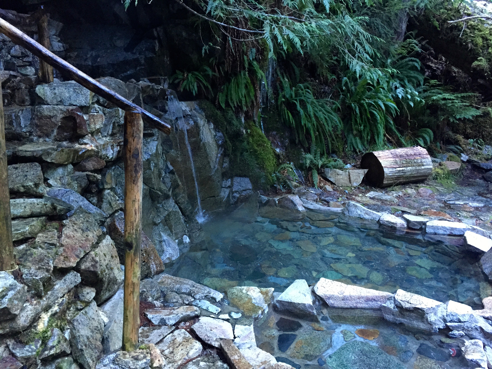

1. Goldmyer Hot Springs
To find this beautiful natural hot spring, start your hike at the Dingford Creek Trailhead. The fastest way is to pass through the big metal gate at the far end of the trailhead and continue for approximately four miles. The springs emerge from the inside of an old horizontal mine shaft with a constant flow of hot water that comes down with cooler and cooler temperatures. Additionally, there's also a cold water pool located next to the hot springs that's perfect for a cool down!